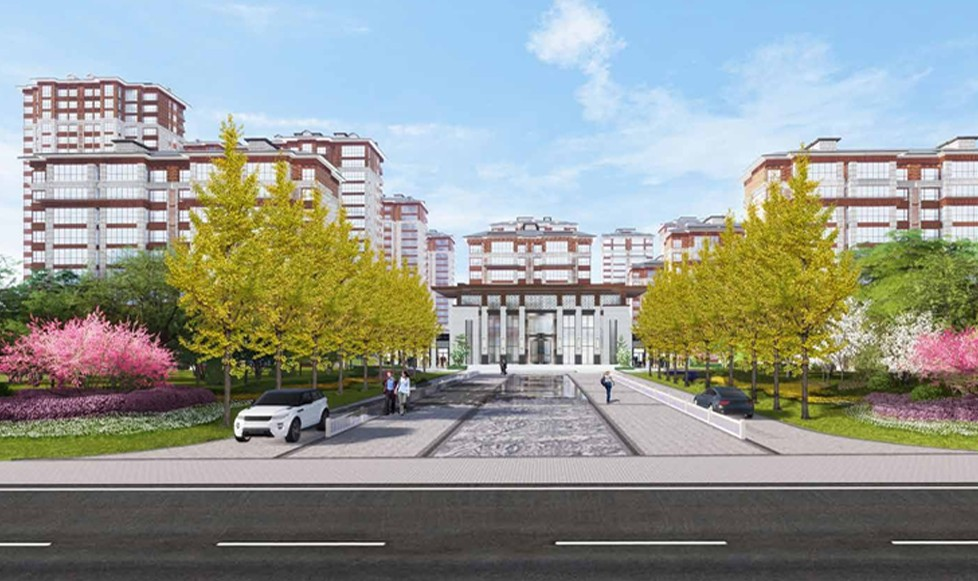

A PARK-SIDE NEIGHBOURHOOD
长瑞 · 阳光华苑
居住河北 · 晋州2020

ABOUT THE PROJECT
借周边的公园与绿带，延续居住中的自然感。
场地邻近湿地公园与市政绿化带。方案围绕居住入口与公共景观展开，让社区空间与周边绿意相互呼应。
A PARK-SIDE NEIGHBOURHOOD

ABOUT THE PROJECT
场地邻近湿地公园与市政绿化带。方案围绕居住入口与公共景观展开，让社区空间与周边绿意相互呼应。